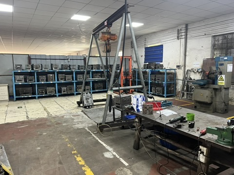

Taotao-owned factory-visit photo. It illustrates a later production-site check; it is not evidence about any Canton Fair exhibitor or the buyer's order.
You have met a supplier, handled a sample and heard a plausible price. What should happen before you pay for your own sample? Convert the booth conversation into a written, product-specific request. A friendly face-to-face meeting can reveal how clearly a team answers questions, but it cannot establish who will sell to you, where production will happen or whether the displayed item is the version you will receive.
The official Canton Fair schedule places the 140th fair in Guangzhou on October 15–19, October 23–27 and October 31–November 4, 2026. Those phases create useful meeting opportunities; the buying decision still needs its own evidence.
The decision: request a sample, pause or investigate further?
For a buyer comparing, for example, a motorcycle helmet and a building-hardware component, the same three questions apply—but the product specification and any market-specific compliance evidence must be checked separately. Do not treat a booth display, a photograph or a generic certificate as approval for either exact item.
Send one follow-up request with three evidence blocks
| What to record | What to ask the supplier for | What the answer helps you decide |
|---|---|---|
| Who is selling? | Full legal company name, Chinese registration identifier, quotation issuer, invoice seller and proposed payment beneficiary. | Whether the commercial parties match or need a documented explanation. |
| What is the exact item? | Model or drawing revision, materials, size or configuration, accessories, packaging and intended destination market. | Whether the sample and quotation describe the same purchasable product. |
| What will the sample prove? | Sample purpose, inspection criteria, cost, dispatch method, expected date and whether it is representative of normal production. | Whether paying the sample fee will answer the question you actually have. |
This is a Taotao buyer worksheet, not a claim that every exhibitor has the same structure. A trading company and a separate factory may be a valid arrangement; the roles should simply be clear enough to verify.
Verify the answers outside the booth
- Compare the Chinese legal name and registration identifier with the public National Enterprise Credit Information Publicity System. The public record is a registration baseline, not a credit rating or proof of factory capability.
- Check that the model, revision and configuration appear consistently on the sample request, quotation and any test or certification documents. Ask the issuing body or relevant official database to confirm the scope where such evidence is required; do not infer compliance from a logo.
- If manufacturing capability matters to the decision, arrange a focused factory visit or request a dated, product-relevant production or quality record. A workshop photo alone is context, not proof that your specific order can be made there.
Use a clear payment gate
- Continue: the seller's identity is traceable, the sample purpose and specification are written down, and the fee and dispatch terms are understood.
- Pause: a material field is missing, such as the exact model, sample criteria or receiving entity. Ask one named person for a written correction.
- Escalate: the quotation, invoice and payment beneficiary conflict without a credible explanation, or a product-specific compliance claim cannot be substantiated. Seek independent verification before paying.
My earlier corporate-banking work informs how I compare publicly available, authorised and observable evidence. It does not give Taotao access to private banking records or turn a sourcing review into a financial opinion.
Meet with a decision in mind
I am available for sourcing conversations during the fair's phases. Bring a short product brief, target market and the one decision you need to make next. Helmets and visors are Taotao Trading's core product focus; for other South China products, I will explain what we can support and what still needs checking. You can also review our helmet and visor category or other sourcing categories before contacting us.
For the event dates and product sections, see the Canton Fair's official 140th-session schedule. For a pre-visit shortlist, see our separate preparation guide.